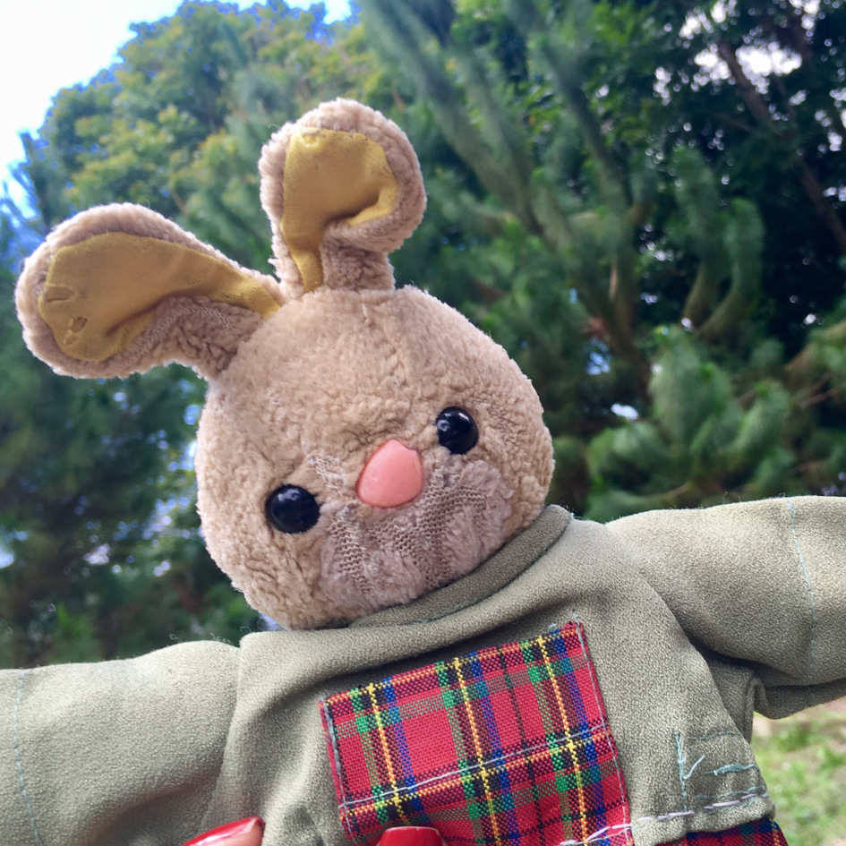
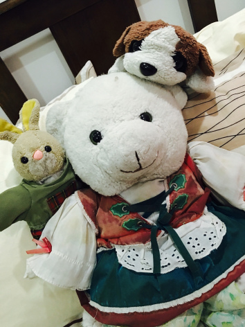

Rabbit is my companion since I was a kid, I can’t even remember where he came from and how our relationship started; maybe it was just a love at first sight. All I know is that I bring Rabbit whenever I go on trips and sleepovers; he is basically my ‘plus one‘.
Since Rabbit is my forever companion and the main actor of this blog, here are some facts about him:
- Birthday: December 4, 1993 (We made that up, but we seriously celebrate it every year.)
- Height: 9.5 inches
- Weight: 500 grams
- Nationality: Filipino
Rabbit's two other siblings, Nikiang (the on in the middle) and Nikiong (the one on the right)
